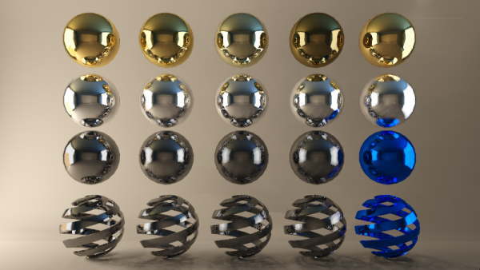

Hello Brighters!
Brighter3D keeps on moving forward, and with the new 2.8.1 release that’s now available for download you’ll find a few new functionalities, fixes and optimizations that’ll make using the plugin more efficiently.
First of all, we prepared Brighter3D for the Sketchup 2018 PRO release. Unfortunately Trimble decided to not continue MAKE version, but you can still use SketchUp 2017 MAKE for free.
We tested & optimised the plugin for the new version, but if you find any possible glitch, please get back to us and we’ll fix things.
Also, one of the improved functionalities is the capability of reversing all selected faces with a single touch of the Reverse Faces Button form the Brighter3D Toolbar. Previously this was possible only one by one. Reversing is done preserving the material.
For any user of a rendering plugin, reversing faces (a regular problem in rendering world) is a real pain, and our functionality increases the workflow’s efficiency. Also, reversing faces is not only useful for rendering purposes. Our plugin can be used for this task unrelated to any rendering job – yes, you are welcome.
We also made a small improvement in interface UX. Namely, the Play/Render Button now reflects the status of the rendering process. As you may know already, Brighter3D can render in the background while you work – an awesome productivity feature. Previously, you couldn’t tell if Brighter renders or not from within the Sketchup’s working window, for that you had to press Play/Render and see if there is a render process running. Now, if this Button looks pressed, that means Brighter3D is crunching lights. If in normal state, it does not.
We remind you that rendering in the background also allows excellent efficiency for when tweaking materials and their properties, because in the Material Editor Window, you can live preview any change in material settings – a feature only available when Rendering is running.
We also added metal materials, as now you can turn on metal checkbox and selected color will become the color of the reflection.
You can download sample scene (rendered image above) here.
Last but not least, this 2.8.1 version is the last one which has both 32bit and 64bit versions. All future versions will be released as 64bit only, thus allowing for truly superb performance: use of whole memory for processing, for new features such as super realistic materials (based mainly on separate textures as albedo, reflectance and roughness).
We estimate that the impact of releasing only for 64bit is minimal, since in an rendering environment, 64bit systems are really ubiquitous.